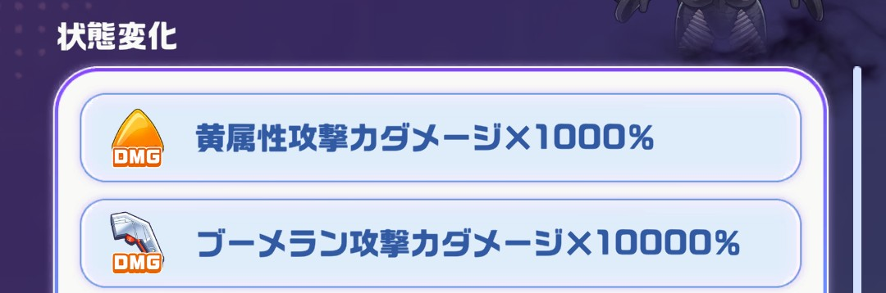
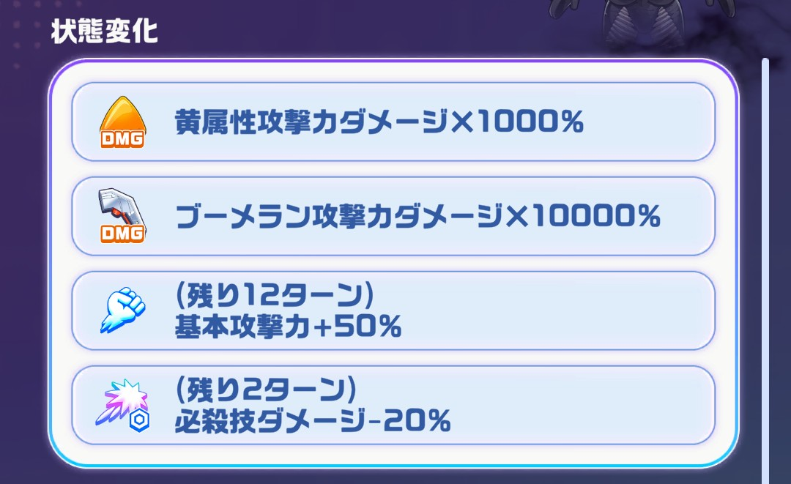
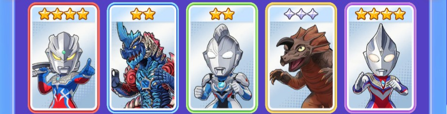
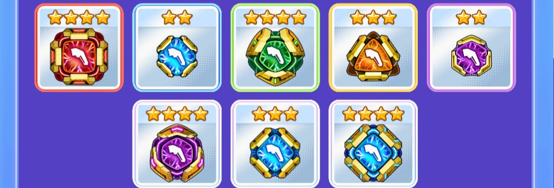
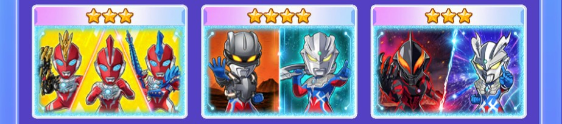
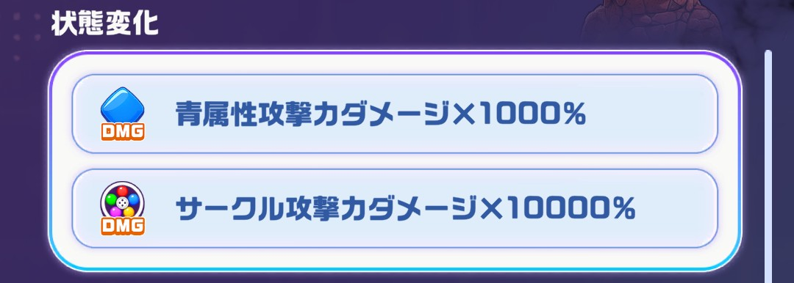
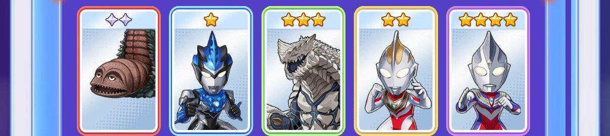
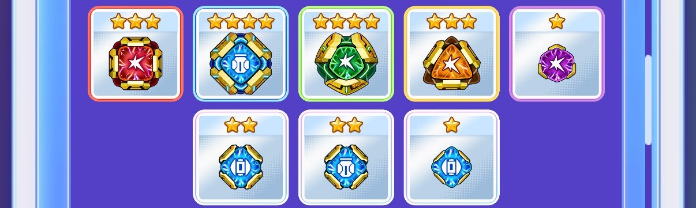
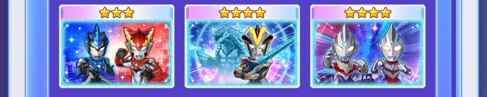

パズシュワ攻略まとめ
現イベント解説(OTS ゼットン/パンドン)
基本情報
・ピース操作で移動元の移動先との掛け合わせをすると移動元の属性になる
例えば、青必殺技玉を操作して赤必殺技に掛け合わせると青属性の合体必殺技となる
・サークルをタップした際に消去(選択される)色はピースは盤面で一番多い色が選ばれる
※同数の場合は盤面左上から→に見て最初に出てきた色となる
・必殺技玉をピッケルで壊すとターン消費せずそのターンから必殺技の効果を受けられます。
例えば、アストラの1ターン青属性の攻撃UPについてはピッケルを使用したターンとその次のターンまで
効果が及ぶので通常使用したときよりも1ターン多く恩恵が受けられます。
ゼットン編
攻略のポイント
ゼットンは黄属性やブーメランのダメージ補正がかなりついています
黄属性ステータスはあまり強化するすべがないためブーメランで攻めるのが良さそうです

ゼットンは初回攻撃してくるときに基本攻撃や必殺ダメージを低下させてくる場合があるようです。

確定サークルその1
確定サークルその2
オススメパーティ(ブーメラン)
キャラ

・🟥赤キャラ→ウルトラマンゼロ(ツインソード)
・🟦青キャラ→レキネス
・🟩緑キャラ→ウルトラマンゼット(オリジナル)
・🟨黄キャラ→アギラ
・🟪紫キャラ→ウルトラマンティガ(マルチタイプ)
キャラ入れ替え候補
・ツイゼロ→ゼロ、セブン、オメガ、マックス
・レキネス→ゼロ、セブン、オメガ、マックス
・ゼット→なし
・アギラ→ゼロ、セブン、オメガ、マックス
・ティガ→ゼロ、セブン、オメガ、マックス
コア

・🟥赤コア→☆4RブーメランコアUR(ブーメランUP)
・🟦青コア→☆2BブーメランコアSSR(ブーメランUP)
・🟩緑コア→☆4GブーメランコアUR(ブーメランUP)
・🟨黄コア→☆3YブーメランコアLR(ブーメランUP)
・🟪紫コア→☆2PブーメランコアSSR(ブーメランUP)
・⬜自由枠コア→☆4PブーメランコアUR(ブーメランUP)
・⬜自由枠コア→☆3BブーメランコアLR(ブーメランUP)
・⬜自由枠コア→☆4BブーメランコアUR(ブーメランUP)
コア入れ替え候補
・🟥赤コア→ブーメランUPのコア
・🟦青コア→ブーメランUPのコア
・🟩緑コア→ブーメランUPのコア
・🟨黄コア→ブーメランUPのコア
・🟪紫コア→ブーメランUPのコア
・⬜自由枠コア→ブーメランUPのコア
・⬜自由枠コアブーメランUPのコア
・⬜自由枠コア→ブーメランUPのコア
リンクカード

・『ウルトラマンオメガ』(オメガ-赤き光の巨人-)
・セブンの息子
・ゼロVSベリアル
・ティガ関連のカードも候補
ウルトラメカ
・優先順位1 ブーメラン強化
・優先順位2 弱点強化
・優先順位3 黄属性強化
立ち回り
このパーティの戦略としてはブーメランステータスを強化して主軸となる
ゼロとゼットのアビリティを最大限活かしてブーメランを生成しながらダメージを与える。
大量のブーメラン(サクブメじゃない)を作成してからボーナスを発動させてドリル等でまとめて消してスコアを伸ばす。
必殺技による盤面全消しはあまり狙っていないため編成で怪獣の枠を減らしてみるのも良さそう。
パンドン編
攻略のポイント
パンドンはサークルや青属性のダメージ補正がかなりついています
ガイアSVやbb&ブルを編成して攻めるのが良さそうです

確定サークル
オススメパーティ
キャラ

・🟥赤キャラ→ツインテール
・🟦青キャラ→ウルトラマンブル アクア
・🟩緑キャラ→シェパードン
・🟨黄キャラ→ウルトラマンガイア(スプリームヴァージョン)※画像は仮
・🟪紫キャラ→ウルトラマンティガ
キャラ入れ替え候補
・ツインテール→シャゴン
・ブル→なし
・シェパードン→テラフェイザー、デスドラゴ
・ウルトラマンガイアSV→メビウスバーニングブレイブ
・ティガ→オーブ、トリガー
※メビウスbbを編成した場合は赤属性強化のキャラを採用する
コア

・🟥赤コア→☆3RアタックコアLR(通常UP)
・🟦青コア→☆4BナパームコアUR(青属性UP)
・🟩緑コア→☆4GアタックコアUR(通常UP)
・🟨黄コア→☆3YアタックコアLR(通常UP)
・🟪紫コア→☆1PアタックコアSR(通常UP)
・⬜自由枠コア→☆2BロケットコアSSR(青属性UP)
・⬜自由枠コア→☆2BナパームコアSSR(青属性UP)
・⬜自由枠コア→☆1BロケットコアSR(青属性UP)
※メビウスbbを編成した場合は赤属性強化のコアを採用する
コア入れ替え候補
・🟥赤コア→サークルUPのコア
・🟦青コア→青属性UPのコア
・🟩緑コア→ボム系UPのコア
・🟨黄コア→サークルUPのコア
・🟪紫コア→サークルUPコア
・⬜自由枠コア→青属性UPのコア
・⬜自由枠コア→青属性UPのコア
・⬜自由枠コア→青属性UPのコア
リンクカード

・『ウルトラマンR/B(ルーブ)』(ロッソ&ブル)
・『ウルトラマンギンガS』(シェパードンセイバー)
・『ティガ&トリガー』
※メビウスbbを編成した場合は赤属性強化のカードを採用する
ウルトラメカ
・優先順位1 青属性強化
・優先順位2 サークル
・優先順位3 弱点
立ち回り
このパーティの戦略としてはブルの必殺技を使った後に高火力を叩き込むことを目的としたパーティです。
ブルの必殺技をピッケルで発動することでピッケル使ったターンとその次のターンが青属性になるので
そのタイミングでバトルアイテム使ってもすべて青属性での攻撃判定なのでオススメです。
1.ブルをピッケル
2.バトルアイテムで盤面整える
3.コンビネーション攻撃